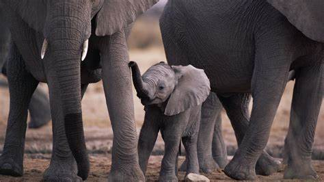
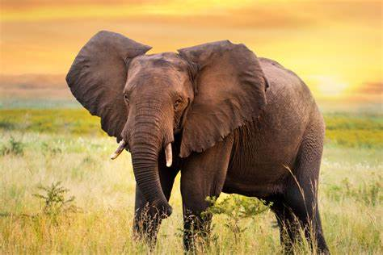

Son animales mamíferos, exclusivamente herbívoros cuya característica principal –además del gran tamaño– es su larga trompa y sus enormes orejas. Se organizan en manadas de unos 20 miembros, miden casi 4 metros los ejemplares más grandes y pueden llegar a pesar más de 6.000 kilos. Suelen vivir alrededor de 70 años y tienen el periodo de gestación más largo de todos los animales: 22 meses. Nada más nacer, las crías ya pesan más de 100 kilos.
Debido a su gran tamaño, tienen también un cerebro muy grande por lo cual son animales muy inteligentes a los que se asocian comportamientos como el duelo por una pérdida, la asociación con otros miembros, el uso de herramientas, la adopción, el juego e incluso el autorreconocimiento.

Las orejas de los elefantes actúan como termostato ayudando a soportar el fuerte calor de las zonas donde habitan y su trompa en realidad no es más que una nariz muy desarrollada que también usan como un brazo largo. Los colmillos los usan para buscar comida y agua y son uno de los motivos por los que esta especie se encuentra amenazada, ya que el hombre los utiliza por el valor del marfil.
MÁS IFORMACIÓN SOBRE LOS ELEFANTES
El primer baño de barro de la elefantita Makena
La elefantita Makena, que acaba de cumplir 6 meses, ha vivido por primera vez una de las experiencias que más disfruta la manada de elefantes: la refrescante lluvia.
EMAIL
Curiosidades sobre el elefante asiático, la especie más social y menos documentada
Las maravillas del colosal elefante asiático

El elefante asiático es el mamífero terrestre más grande del continente asiático, además de la especie más social y más vinculada con la actividad humana.